Exclusively for Hedge fund managers
Here is a description of our service, whose primary objective is to
position your fund among the top performers in the sector
and secondly,
to allow you to maintain a competitive advantage in the face of the rise of AI, while retaining control of your investments.
We believe no AI has been able to produce cyclical trend analyses as accurate as ours.
The way we proceed is simple and straight forward.
We offer you a review of the state of your current or future assets by situating their short, medium and long term trends, accompanied by suggestions for adding or removing assets which, depending on their cycles, could greatly improve your fund.
This will immediately optimize your next transactions by ensuring the best possible timing.
Contact us for more information:
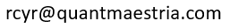
If you want to find the secrets of the universe,
think in terms of energy,
frequency,
and vibration.
Nikola Tesla
Since then, science has developed a multitude of scientific devices in medicine, telecoms, astronomy... all based on spectrography, i.e. the analysis of frequency spectra.
It is by using this same mathematical formula of spectral analysis that I have developed indicators based on frequencies, i.e. on the inherent cycles of financial or economic variations.
This site features a tutorial, references for programmers, cyclical indicators of the 30 components of the Dow Jones and concrete examples of analysis on different financial instruments.
The primary goal is to raise awareness of spectral analysis applied to financial variations and to provide hedge fund managers with an additional tool in their toolbox.
Robert Cyr
Here are some concrete examples of how to use the indicators.
Prerequisite: please read the Tutorial.
Zoom: click on the picture.
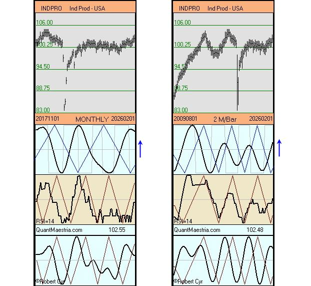
As of February 2026. Spectral analysis applied to economic data:
USA Industrial Production: Total Index
Note:
Monthly and 2-month graphs.
The blue arrows associated with the long-term cyclical lines point towards an upward trend.
* Retrieved from FRED, Federal Reserve Bank of St. Louis
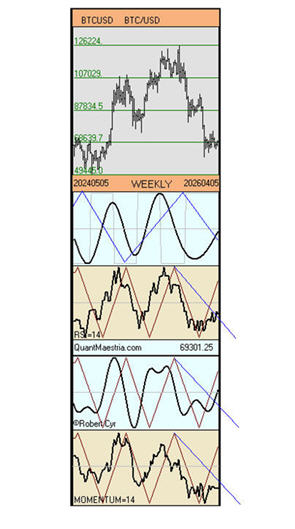
As of April 07 2026. Spectral analysis for BTC-USD
Note:
In formation, Phase Shift on the upside.
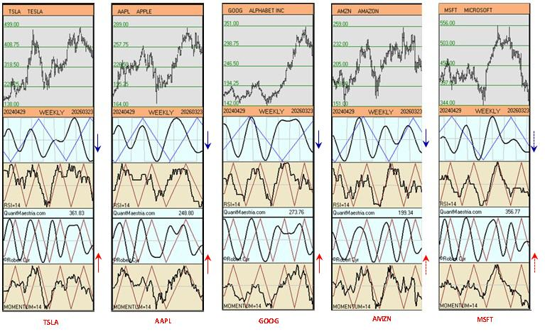
As of Mach 27 2026. Spectral analysis for the Magnificient 7
Note:
Due to their strong downward cycles, charts for META and NVDA are not shown.
For TSLA, AAPL, GOOG, AMZN, and MSFT, the indicators in the charts above allow us to have both a medium- and long-term perspective. Here's how to identify them.
LONG TERM: via long-term triangular cycles.
The chart adjacent to the blue arrow represents the long-term cyclical trend via the very wide blue triangular curve, which oscillates over several months.
All five stocks have their spectral curve below this triangular curve, meaning they are in a long-term downtrend.
However, note that their rectangular curve is either rising or about to. This indicates that upward pressure should begin on the spectral curve.
MSFT is the stock that comes closest to a reversal above the triangular cyclic curve.
MEDIUM TERM: via medium-term triangular cycles.
The charts adjacent to the red arrow represent the medium-term cyclical trend, and the triangular curve (red) oscillates more rapidly.
TSLA, AAPL, and GOOG are the stocks whose spectral curve and momentum are closest to crossing the red triangular cyclic line upwards.
Note that we are using weekly charts, and medium term refers to weeks (i.e. patience).
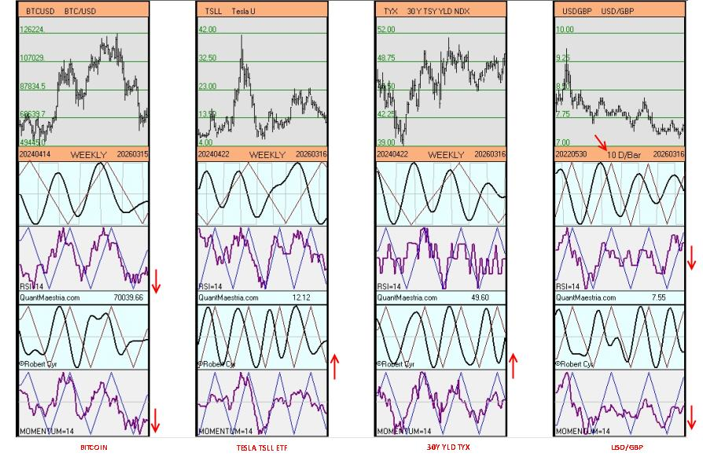
As of Mach 20 2026. Spectral analysis for BTC-USD, TSLL ETF, TYX 30Y YIELD and USD-GBP.
Note:
Momentum, below the triangular cyclic curve:
Bitcoin and USD-GBP
Momentum, above or almost above the triangular cyclic curve:
TSLL and 30Y YLD TYX
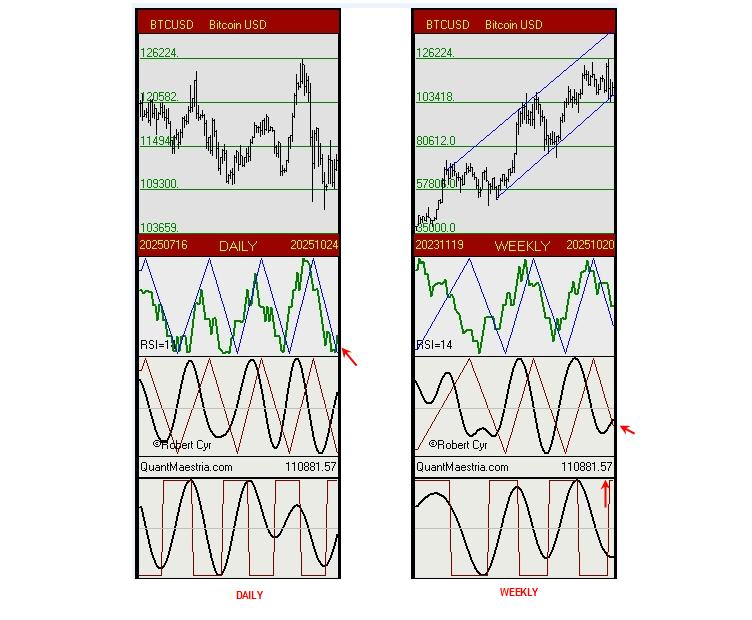
As of October 24. Spectral analysis : BTC-USD
All cyclical indicators are or are beginning to move upward.
The support line on the weekly chart must be respected.
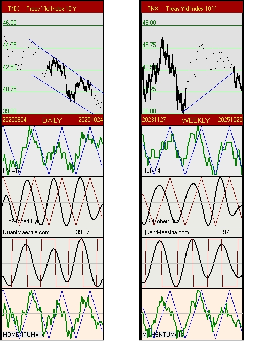
As of October 24. Spectral analysis : TNX - Treasury Yield 10 Y.
On both the daily and weekly charts, cyclical indicators are now positioned to begin a rise,
and perhaps end the TNX decline that has lasted at least 20 weeks.
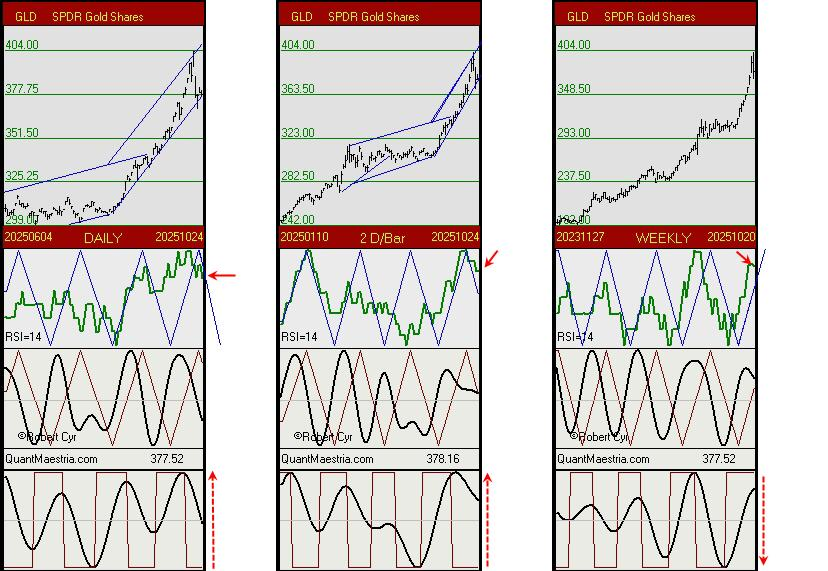
As of October 24. Spectral analysis : GLD - SPDR Gold Shares
In the medium term, the cyclical indicators on the weekly chart still have room to climb further, but a sudden reversal is also possible. 50 - 50.
We should monitor both short-term charts for the following specific features:
1. The corridor is still bullish, and the decline has stopped at the support line.
2. The RSI indicator has barely moved lower, and on the daily chart, it is very close and poised to break above the triangle line. On the 2-D-Bar chart, the RSI has returned to the upside.
À moyen terme, les indicateurs cycliques du graphique hebdomadaire disposent toujours d'une latitude pour encore grimper mais un revirement soudain est tout aussi possible. 50 - 50.
Nous devons surveiller les deux graphiques à court terme pour les particularités suivantes:
1. Le corridor est toujours haussier et le repli s'est arreté sur la ligne de support.
2. L'indicateur RSI n'a presque pas descendu et sur le graphique quotidien, il est très près et en position pour franchir la ligne triangulaire vers le haut. Sur le graphique 2 D-Bar, le RSI est revenu à la hausse.
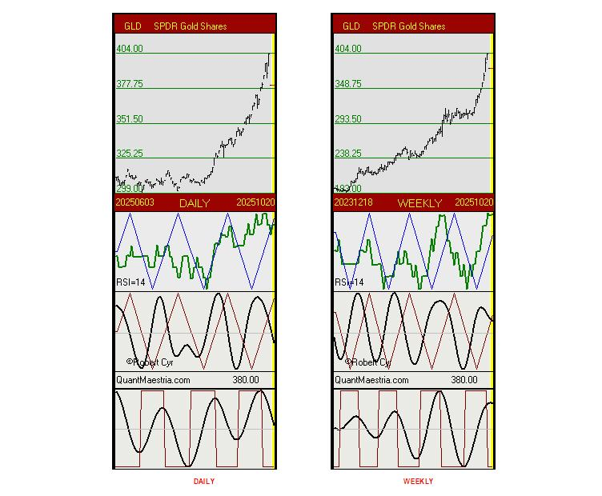
As of October 20. Spectral analysis : GLD - SPDR Gold Shares
Example of a 2-bar extrapolation with a projection at 380.
(Extrapolation: Red bars on a yellow background.)
Note:
An extrapolation is only a possibility; it's a big IF.
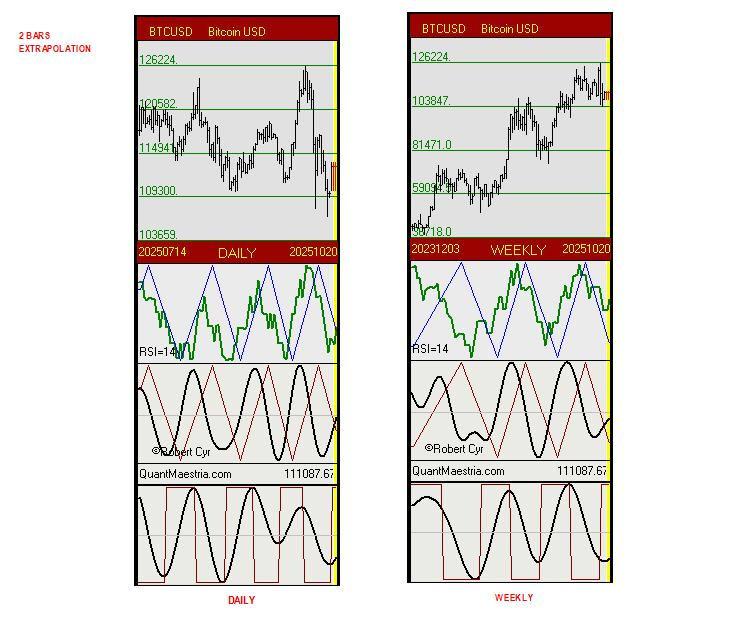
As of October 20. Spectral analysis : BTC-USD
Example of a 2-bar extrapolation with the last close.
(Extrapolation: Red bars on a yellow background.)
Note:
An extrapolation is only a possibility; it's a big IF.
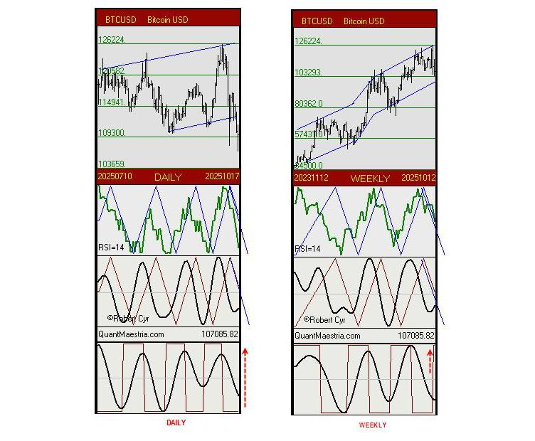
As of October 17. Spectral analysis : BTC-USD
Note:
It is not possible to predict where the bottom will be, but based on the position of cyclical indicators, a cyclical turnaround is approaching on both graphs.
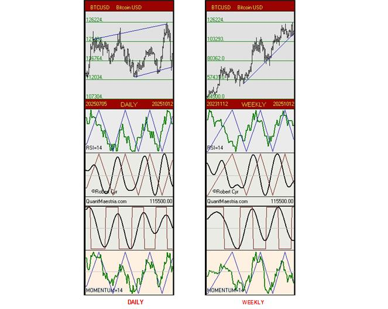
As of October 12 (Projection at 115500). Spectral analysis : BTC-USD
Note:
By respecting the support line, the cyclical indicators on the WEEKLY chart are still well positioned to begin an uptrend. All that remains is to wait for the bearish cycle on the DAILY chart to end.
In addition to the RSI curve, we've added the Momentum curve.
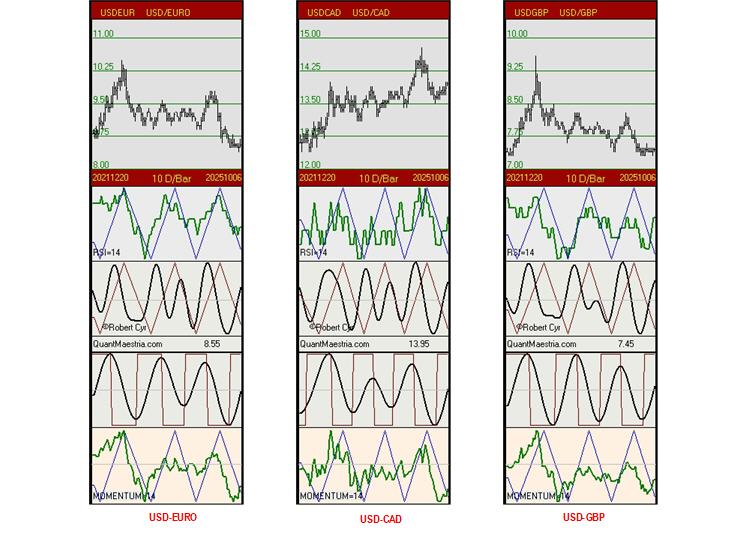
As of October 10. Spectral analysis USD-EURO, USD-CAD, USD-GBP
Note:
With the long-term chart (10 weeks per bar), the cyclical indicators of the three currencies favor the USD dollar.
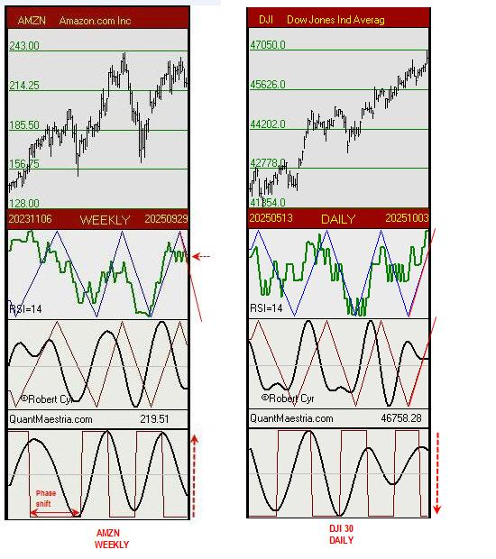
As of October 3. Spectral analysis : Dow Jones 30 components
Dilemma for systematic trading:
Long:
Looking at the WEEKLY chart of the DJI30 components, John, our first trader, realizes that there are 17 stocks whose rectangular indicators are steadily poised to initiate an upward turn.
In addition, several have their RSI indicators signaling a phase shift upward.
The chart below for AMZN is a concrete example.
Short:
Looking at the DAILY chart of the DJI30, Simon, our second trader, realizes that the cyclical indicators are negative and that a decline is highly likely.
See the DJI30 chart below.
Q: What would be the best approach or strategy to adopt?
The 17 stocks mentioned are presented here:
quantmaestria.com/Dow30.html
The attached content is provided as general information regarding spectral analysis only and should not be taken as investment advice.
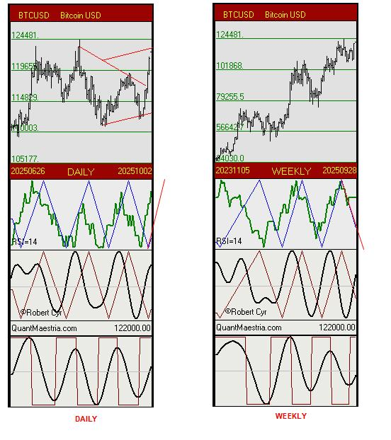
As of October 3 (closing projection at 122000). Spectral analysis : BTC-USD
Note:
Here is an update of the cyclical indicators with a hypothetical close at 122,000, a gain of 12% in one week, on the daily and weekly charts.
The attached content is provided as general information regarding spectral analysis only and should not be taken as investment advice.
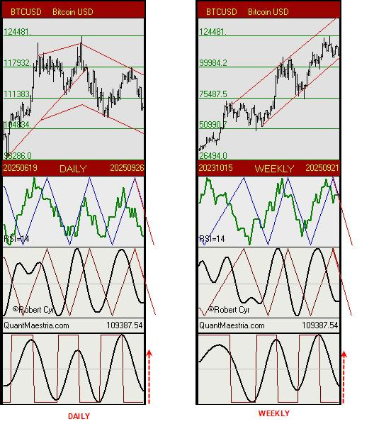
As of September 26. Spectral analysis : BTC-USD
Observation:
The weekly chart has been updated and maintains its indicators from last week, particularly the rectangular cycle, which is expected to initiate an upward reversal in the coming weeks.
We are adding the daily chart, which also features a highly cyclical rectangular indicator whose period is reaching a reversal point. Meanwhile, a bottom has still not been confirmed!
The attached content is provided as general information regarding spectral analysis only and should not be taken as investment advice.
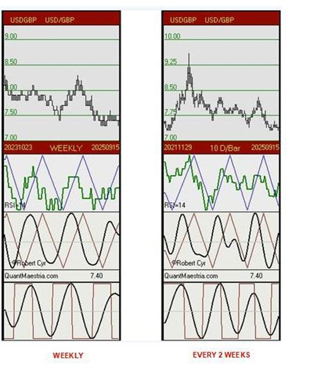
As of September 19. Spectral analysis : USD-GBP (USD-EURO, USD-CAD)
Weekly and Every 2 Weeks charts for the USD-GBP currency.
Observation:
For all three currencies, EUR, CAD, and GBP, the cyclical indicators are bullish in the short term but negative in the medium term (see the attached USD/GBP weekly chart).
Is the downward weight of the weekly indicators really significant?
No, if we take into account the cyclical indicators on the two-week chart (see attached), which are bullish and actually counterbalance the weekly indicators.
This is a concrete example of the interaction between short-, medium-, and long-term trends that must be visualized.
The attached content is provided as general information regarding spectral analysis only and should not be taken as investment advice.
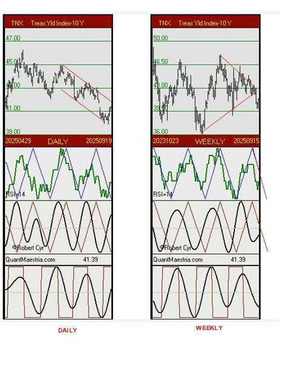
As of September 19. Spectral analysis : TNX Treas. Yld Index 10Y.
Daily & Weekly charts.
Observation:
Last week, the rectangular indicator on the daily chart signaled a possible upward reversal, and that's what we've been seeing ever since.
On the weekly chart, the cyclical indicators are still trending downward, but the rectangular curve, which is highly cyclical, is now poised to reverse upwards in the coming weeks. No confirmation yet.
The attached content is provided as general information regarding spectral analysis only and should not be taken as investment advice.
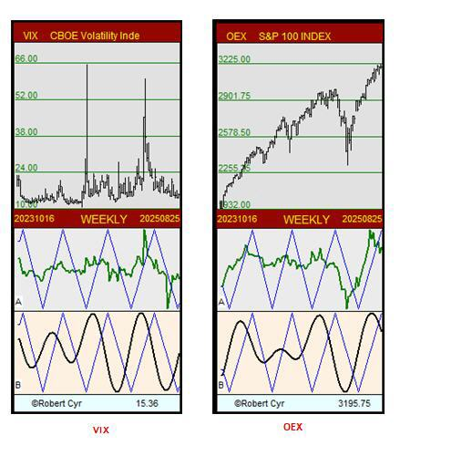
As of August 29. Spectral analysis : VIX & OEX.
Updated weekly charts.
The attached content is provided as general information regarding spectral analysis only and should not be taken as investment advice.
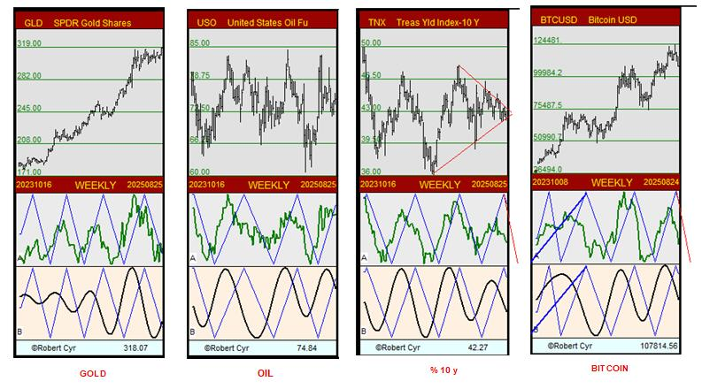
As of August 29. Spectral analysis : Gold, Oil, TNX 10Y, Bitcoin.
Updated weekly charts.
The attached content is provided as general information regarding spectral analysis only and should not be taken as investment advice.
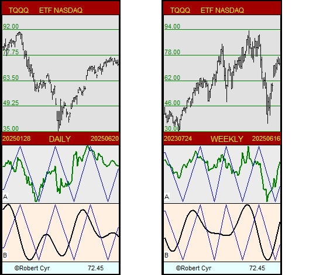
35 YEARS OF EXPERIENCE IN SPECTRAL ANALYSIS.
Disclaimer: The content on this site is provided as general information only and should not be taken as investment advice. All site content, including, but not limited to: forum comments by the author or other posters, articles and charts, advertisements, and everything else on this site, shall not be construed as a recommendation to buy or sell any security or financial instrument, or to participate in any particular trading or investment strategy. The author may or may not have a position in any company or advertiser referenced above. Any action that you take as a result of information, analysis, or advertisement on this site is ultimately your responsibility. Consult your investment advisor before making any investment decisions.
Maestria Quantitative Research - Robert Cyr